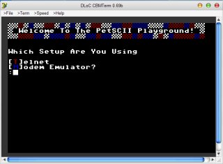

I've put up and experimental "telnet" BBS that uses the Commodore PetSCII character set exclusively. (That means if you try to access it via a regular telnet client on a PC, such as PUTTY, all you'll see is trash.) It is a multi-user system that uses Commodore color and graphics (PetSCII) for all of it's display routines.
The BBS does not run on a real C64, because it would be difficult to make that multi-user unless I did it with Lunix and a SLIP connection, which I haven't experimented with yet. I'm sure it could be done, but I went with what I had handy, which is Linux on a PC...
The client, however, must be a C= compatible CG terminal program. I used to use CCGMS 5.5 running on Vice in Linux with a null modem (software) to give my C64 a shell that I can telnet from. To get from there to the BBS, you must make sure you are running telnet as '8-bit clean' and in 'binary' mode. Now, you can use the fantastic CBMTerm that saves a whole heck of a lot of trouble. He was even kind enough to put me in the address book, since he used my BBS to test with. :)
Please e-mail me and tell me what you think. There are 3 parts to the BBS that are functional. The [W]ho function lists all previous "callers". The '[G]raffiti wall' will let you enter messages to other users. The [P]etSCII gallery lets you watch color movies-- very cool
.Oh, the important part---
Using CBMTERM: Just pick 'PetSCII Playground' from the built-in address book. The only thing to note is that you'll want to use at least the 'medium' setting to view the movies, or else they go by so fast you miss the animation. A big part of the old C= BBS experience was the animation of menus, etc.